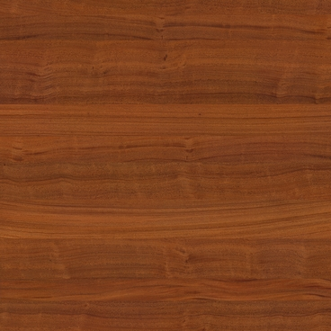
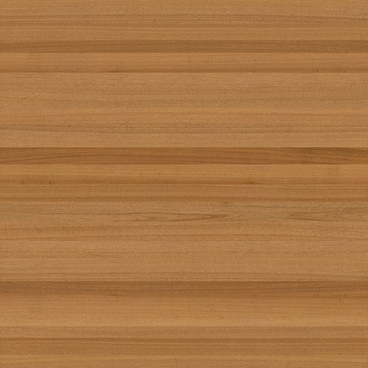
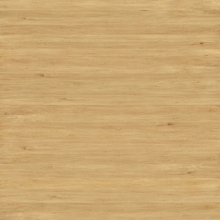

<!DOCTYPE html>
<html>
  <head>
  <a-assets>
    <a-asset-item id="monkey1Body" src="assets/m1Body.obj"></a-asset-item>
    <a-asset-item id="monkey1Eyes" src="assets/m1Eyes.obj"></a-asset-item>
    <a-asset-item id="monkey1FeetHands" src="assets/m1FeetHands.obj"></a-asset-item>
    <a-asset-item id="monkey2Body" src="assets/m2Body.obj"></a-asset-item>
    <a-asset-item id="monkey2Eyes" src="assets/m2Eyes.obj"></a-asset-item>
    <a-asset-item id="monkey2FeetHands" src="assets/m2FeetHands.obj"></a-asset-item>
    
    
        
  </a-assets>
    <script src="https://aframe.io/releases/1.7.1/aframe.min.js"> </script>
  
  </head>
  <body>
    <a-scene>
      <a-obj-model position = "0 0 -4" material="shader:flat;src:#tex1" src="#monkey1Body"></a-obj-model>
      <a-obj-model position = "0 0 -4" material="shader:flat;src:#tex3" src="#monkey1Eyes"></a-obj-model>
      <a-obj-model position = "0 0 -4" material="shader:flat;src:#tex2" src="#monkey1FeetHands"></a-obj-model>
      <a-obj-model position = "0 0 4" material="shader:flat;src:#tex1" src="#monkey2Body"></a-obj-model>
      <a-obj-model position = "0 0 4" material="shader:flat;src:#tex3" src="#monkey2Eyes"></a-obj-model>
      <a-obj-model position = "0 0 4" material="shader:flat;src:#tex2" src="#monkey2FeetHands"></a-obj-model>
      <a-sky tag="BridgeEdited" src="assets/BridgeEdited.jpg"></a-sky>
    </a-scene>
  </body>
</html>